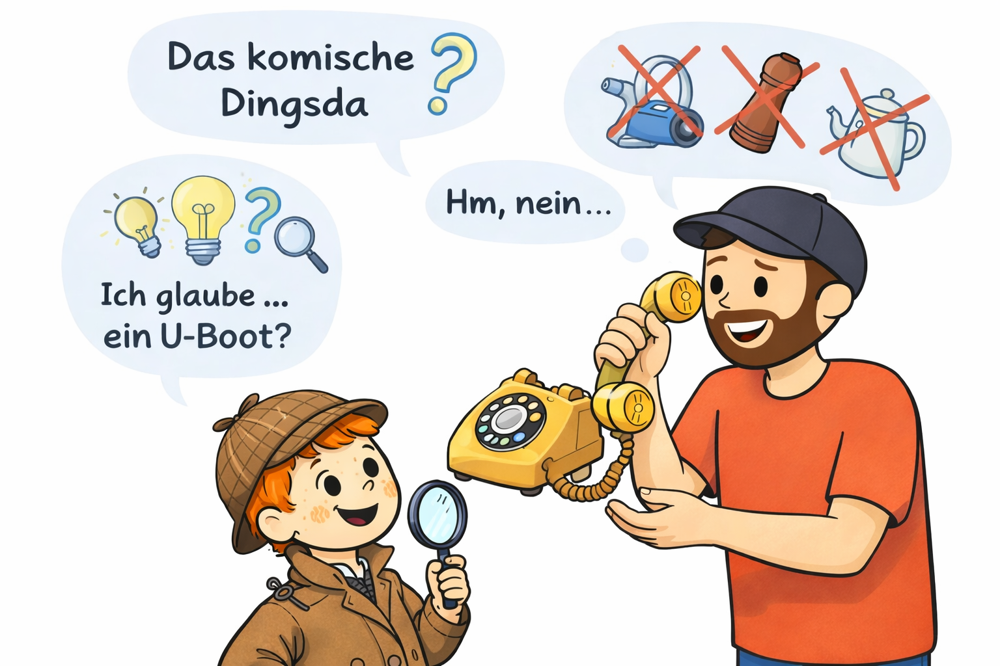
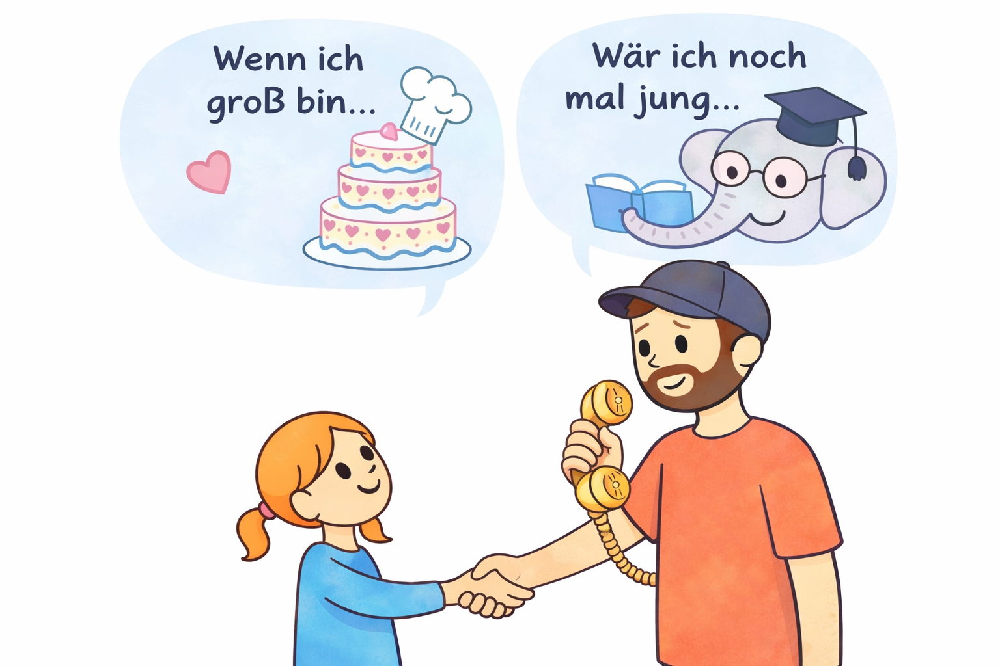

Anschauen · rätseln · fragen
Das komische Dingsda

Ein Erwachsener bringt unbekannte Gegenstände mit. Kinder raten, fragen und entdecken den Beruf dahinter.

Echte Wege · offene Möglichkeiten
Erwachsene erzählen, wie ihr Weg wirklich war: mit Umwegen, Überraschungen und Dingen, die sie erst später verstanden haben.
Anschauen · rätseln · fragen

Ein Erwachsener bringt unbekannte Gegenstände mit. Kinder raten, fragen und entdecken den Beruf dahinter.
Lesen & entdecken
Was wollte jemand als Kind werden? Was ist daraus geworden? Und welche Umwege gab es?